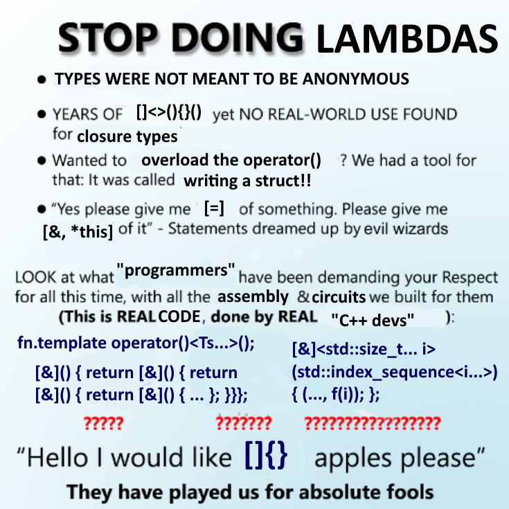

<!-- #region Intro -->

<section full data-background-image="./img/Lambda All The Things_Title Card.png" no-footer change-footer="Introduction">
</section>

<section data-markdown class="list-fade-in-then-semi-out">
    <textarea data-template>
        ## About me
        * Famously hates lambdas
    </textarea>
</section>

<section data-markdown class="list-fade-in-then-semi-out">
    <textarea data-template>
        ## Lambdas
        * Introduced in C++11
        * The world has been worse-off ever since
    </textarea>
</section>

<section data-markdown class="list-fade-in-then-semi-out">
    <textarea data-template>
        ## This talk is
        * A manifesto
        * A call to action
    </textarea>
</section>

<section data-markdown class="list-fade-in-then-semi-out">
    <textarea data-template>
        ## Overview
        * Closure type names
        * Teachability
        * Code readability
        * TUs and boundaries
    </textarea>
</section>

<!-- #endregion Intro -->


<section signpost change-footer="Closure type names">
    Closure type names
</section>

<include src="./regions/1-closure-type-names.html"></include>

<section signpost change-footer="Teachability">
    Teachability
</section>

<include src="./regions/2-teachability.html"></include>

<section signpost change-footer="Readability">
    Code readability
</section>

<include src="./regions/3-readability.html"></include>

<section signpost change-footer="TUs and boundaries">
    TUs and boundaries
</section>

<include src="./regions/4-boundaries.html"></include>


<!-- #region Conclusion -->

<section signpost change-footer="Conclusion">
    Conclusion
</section>

<section my-columns no-footer>
    <div style="margin-inline: auto;">
        
    </div>
</section>

<!-- #endregion Conclusion -->
